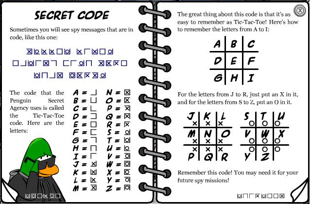
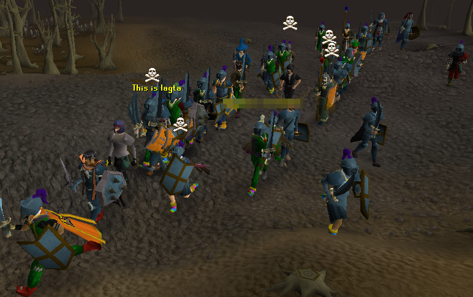
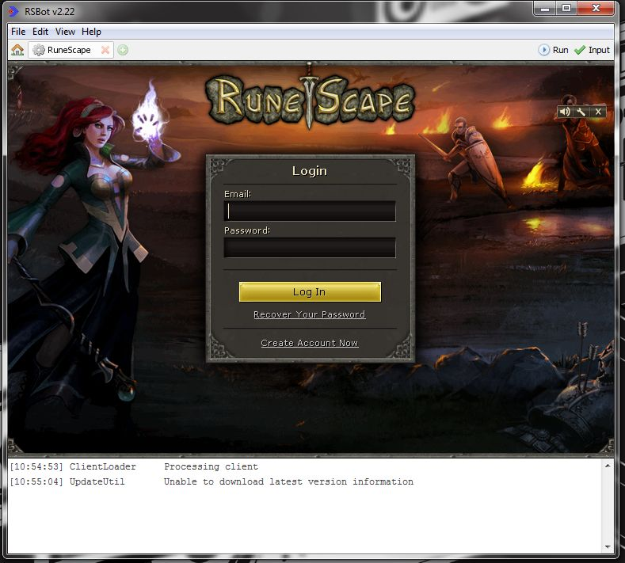
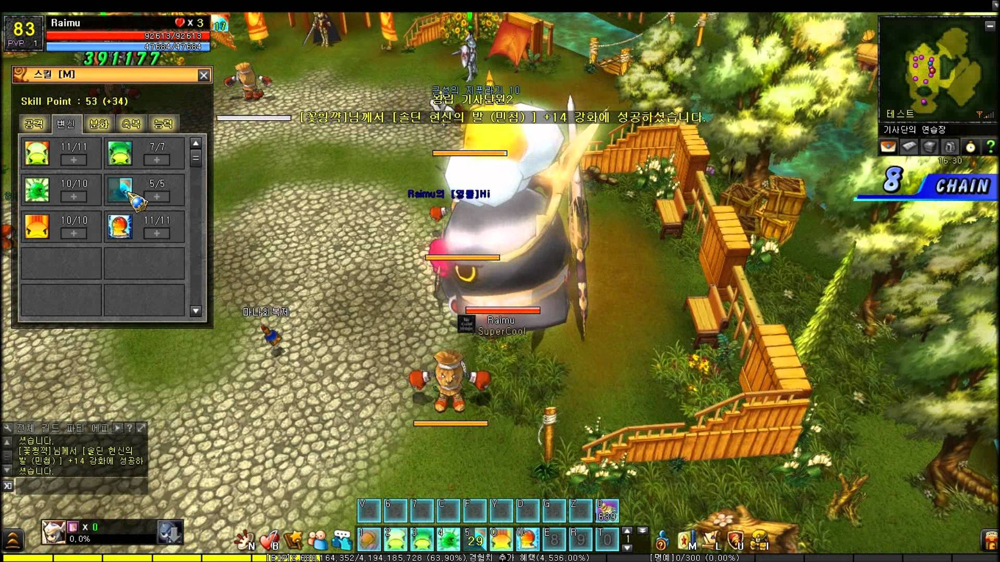
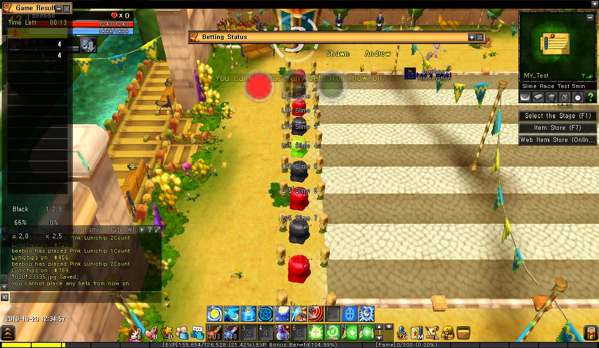
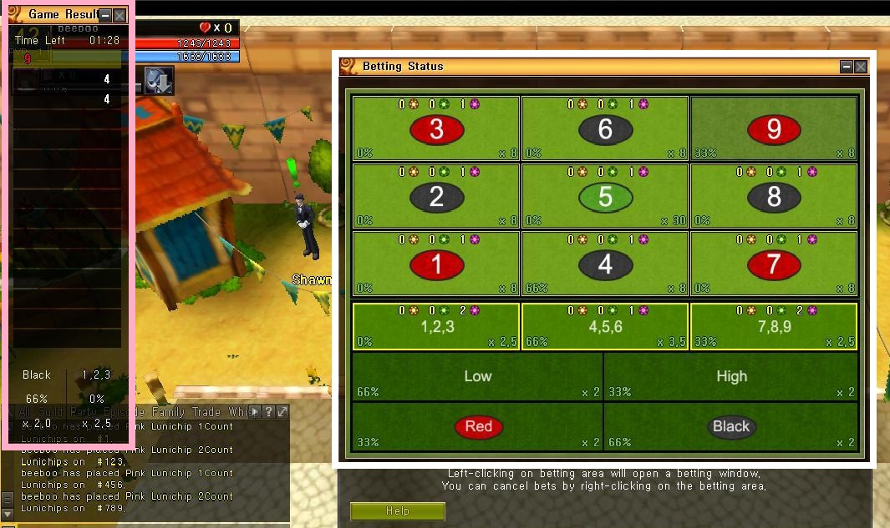
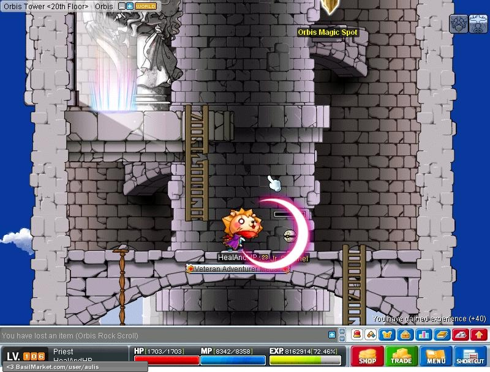
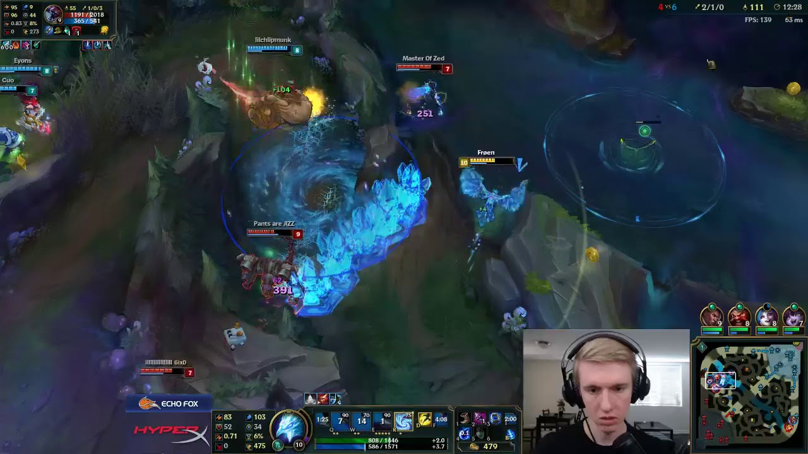
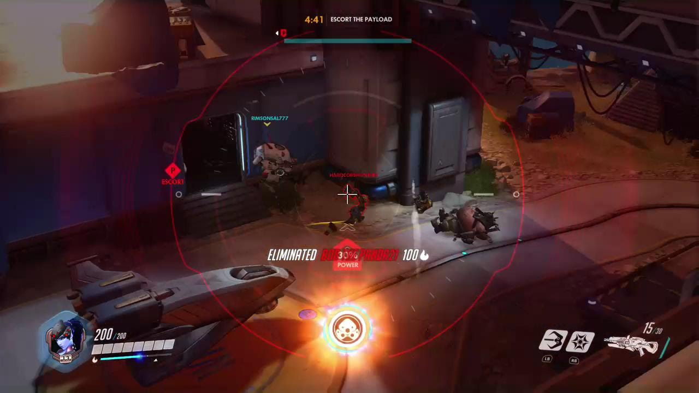

- Mon 27 August 2018
- Non-technical
The Past
Club Penguin (now owned by Disney), 2006
The first game I tried that required internet was Club Penguin. I was in Grade 2 at the time and introduced to this cartoonish game by some peers at Burr Elementary School. To an eight year old, communication with other players, anywhere around the world was a novelty for sure. This was the start of my understanding of MMORPGs (Massive, Multiplayer, Online Role Playing Games), but it soon grew too childish for my tastes.
One memorable part of this game was a mechanic called the "Secret Code" in which some missions were written, shown below. After about a week in the game, I was starting to use this alphabet in real life to write with my nerdy CP peers. I didn't think too much about it at the time, but in hindsight it sure was intellectual for a dumb game with penguins waddling around attempting to curse.

RuneScape (Jagex), 2007-2012
After CP fell out of fashion among eight year olds, RuneScape (run by UK firm Jagex) took over. The overly sensitive speech censor made sure no child learned to curse, for sure, n0t 3v3n w1th r3pl@cem3nts. Since players could trade freely with each other for a time, scammers were commonplace. I learned (the hard way) at age nine that deals sounding too good to be true, are probably too good to be true. This game was innovative for having a solo and group Player-Killing feature in the northern "Wilderness", which was subsequently removed for several years due to various reasons.

This Java-based medieval clicking MMORPG survived for a long time in my list of playable games, especially after I learned of RSBot, a popular scripting engine that interfaced with the game so that you could run Java to perform mundane 'skilling' tasks to level up or generate income. This game forced me to learn a bit of Java and how to set up PATH under Environment Variables, a skill I am very thankful for. I recall spending hours on making JDK work with RSBot, every time Java had an update. I would have the script level me up and get money while I slept or did homework, and then go into the wilderness with the best arrows gold could buy.
The interface for RSBot looked something like this, and could handle anti-bot measures quite well (logs in for you, does "random events", moves the mouse in a 'human' way, etc.) Applause to Timer, one of the lead developers of RSBot who is probably younger than me.

Record of Lunia War (allm), 2007-2014.01.01
I was playing RuneScape when I saw an advertisement to the right of the screen featuring this 2.5-dimensional arcade MMORPG. I clicked in, downloaded the approximately 1 GB installer and installed my first game ever. The first thing I heard when opening the game was Ariel Lin 林依晨's song for the game. Player base was significantly smaller than RS, but was large enough to sustain profitability for a while. Most memorable of this game were the difficulty in mechanics and air combos in Player vs. Player mode, the cartoon cutscenes before and after every stage, and the powerful boss monsters before the game was updated after the open beta test. The game evolved to become easier and easier from that point on, but was still fun to play.
Rodesia was a land of elves, snow girls, ice dragons, orcs, humans, slimes, trolls... Such effort was put into the development of this game, yet it was unable to attract a sufficiently large following later on. Around 2012, the game was consolidated from regional publishers to allm's global Lunia server, with no profit margin whatsoever (pretty certain it lost a lot of money). In late 2013 it was announced that the game was shutting down for good on New Year's Day of 2014. If I amass enough wealth to purchase all rights to a game and then revive it in charity to players, it would be this one.
Here is Lime, the fighting slime. This was one of the most efficient boss-killing characters one could play with, since Lime could transform into a variety of giant slimes.

Additionally, slime race betting was an added feature of the game later on. That was what got me interested in betting strategies and probability. At age 11 I learned of the "Martingale" strategy (double bet size until satisfied) from older, nerdier players, but realised that I don't have infinite gold to bet with. I was no good at slime races back then and probably am no better today, so that speaks to my qualifications for a quant trading role... :')
 
Maplestory 1 (Wizet), 2008-2012
Maplestory is more of a household name than most of the above games. It is a 2-dimensional side-scrolling MMORPG featuring (not the same) slimes, mushrooms, pigs, and so on. The most iconic skill I can show is probably the Magic Claw of the wizard class. The beauty of music in this game cannot be compared to that of any other game. In fact, I still think it is worthy of listening to all day long despite the game turning into a chaotic pay-to-win festival.

I am not sure what made this game so popular for so long, but I can bet that the music helped a lot. It was a relatively brainless game that was all farming and very little skill, so maybe that is what is key to a successful game (for younger players). There was also a significant social component to it which can be helpful for retaining players too.
GunZ, the Duel (MAIET), 2009-2014
MAIET is "TEAM" backwards with an 'I' in the middle!
Of all games I have played, this third-person shooter is by far the most demanding in terms of raw keys pressed per second. Of all 3-D games, it is by far the most skill-dependent game. I would not say it is the most demanding in terms of combo skill, because that can be reserved for 2.5-D games like DnF/DFO (not discussed) or Lunia. The glitchy nature of animation cancelling, perhaps by design, caused all sorts of tricks to be possible. A typical sword-shotgun combo would look like "jump, slash, switch, shoot, reload, switch, dash, slash, switch, shoot, dash", all happening within a second and each action requiring an average of 1-2 keystrokes. My favourite mode was 'gladiator' mode (swords-only) because I had the uncommon skill of performing 3 slashes per jump. This game is significantly more 'skill-based' than a modern popular title like Overwatch. I am not sure why it died out, but I would at least blame it partially on the money-hungry ijji.com (publisher for both GunZ and Lunia at one point) as well as the large number of private servers which decreased the profitability of the official servers.
GunZ would be second on my list of games to revive.
The Present
League of Legends (Riot Games), 2012-current
This is where things get a little more modern. League is a MOBA game, which is quite different from genres I've tried before. Two teams of 5 players attack the opposing team's minions, turrets, and home base "Nexus". Compared to arcade and third person shooters, MOBAs are more strategy, less raw mechanics. League still requires good mechanics (esp. mouse-wise), but they are definitely slower than both Lunia and GunZ. A major frustration is that the matchmaking system often results in lopsided games, which are immediately clear at 5 minutes into the game and then force the player to stay until around 20 minutes. Somehow, such a game became so vastly popular that tickets to the season world finals at major stadiums sell out within minutes.

Overwatch (Blizzard Games), 2016-current
A first-person shooter blended with the typical MMORPG 'hotkey skills'. Quite innovative in its ability to blend those two genres and still be enjoyable. Some call it a knock-off of TF2, but I believe it is novel enough to be a worthy game in its own category. It is very team-based (6 vs 6), just like LoL, and matchmaking still feels 'lopsided' at times. It is somewhat less spectatable than LoL due to its 3-D nature (whose view do we spectate from during a competition?) and pay-to-play, which is why I believe it will not be as popular as LoL anytime soon.

The Future
Of course, it is easy to look back on the past and craft a theory to fit the narrative. I hope that my points remain valid in the future, though :)
I believe the key features to League of Legends' success are:
- free-to-play nature
- spectator mode
- team-building effect for groups of players: kill other players
- MOBA/FPS specific: all players start each game as equals
The first two are nothing special, but the third... It is fun to kill bosses and farm stages with your buddies, but what could be more fun than killing and farming other players? GunZ may have all of these properties, but it doesn't have the last one: starting games on a equal footing. In GunZ, you could have a better shotgun than someone else just because you played the game for longer. All MMORPGs inherently do not have #4 (except outside of some PvP), since people level up by killing monsters. MMORPGs diminish the effect of #3 by having monsters in their games. It is difficult for a game to be televised or made popular if most of the players just kill monsters.
Let's pretend GunZ did have all four properties. It probably wouldn't be as addictive since it initially had no matchmaking system to pair up players with equal skill. If you were matched up against those people in the above video in your first game, you would probably quit GunZ immediately! The good news is, such matchmaking systems are not too difficult to implement these days, and GunZ would probably do just fine if it had enough players.
Those four properties implemented in a game effectively and relatively fairly, are what I believe to drive success and popularity of games. There are probably several other points that are necessary for popularity:
- Appeal to players ages 16+
- One game lasts long enough to spectate and televise
The first condition is rather subjective, and the second one just sounds arbitrary. Know that I am not saying these are what make a game fun or good: they are what make a game popular. In order to appeal to the non-gaming majority of the world, a game needs to be spectatable. If nobody watches it, then how will people learn of it and play it themselves? It is also why some real-life sports are more popular than others: nobody likes to watch sabre fencing, because they have no clue what is going on and points are scored while the spectator blinks their eyes (faster than GunZ).
So what about Overwatch? Why is it doing well?
Overwatch lacks only #1: free-to-play. This would be a significant problem if the game were targeted towards younger kids, but is generally fine since it targets ages 16+. People are willing to shell out $30 for a game that they see played often and looks fun.
What can Lunia do, if it were revived?
Almost Nothing. Pure PvP is not an option - Lunia would lose most of its flavour without its Player vs. Environment stages and bosses. It can, however, be more like DnF/DFO (Dungeon Fighter Online) and implement a 100% equal, fair PvP mode that is purely skill-based. There are some mid-high profile DFO tournaments in Asia and Lunia could follow this path.
Alternatively, it could implement a MOBA-style, large map mode that takes 20 minutes+ per game, but have the player be controlled by arrow keys instead of the mouse. This would make it both spectatable and team-building (most PvP in Lunia is at most 2v2), and probably fit in all of the categories for success.
PUBG? Fortnite?
Aside from free-to-play, both games fit all 6 of the conditions listed above. There is just something special about the battle royale genre that spikes your heartbeat rate, not too commonly experienced in other games. I don't foresee it being too popular in the E-Sports realm for similar reasons to Overwatch: it is hard to spectate a 3-D game during tournaments.
VR Games...
Will not catch on unless something like Sword Art Online is developed. With brain-computer interfaces around, we will have more serious fears to be concerned about.
The future of MOBAs
As new characters get added in to the big games (LoL, DotA), balancing becomes harder and harder. People will probably get sick of these MOBAs at some point for various reasons (changes they don't like, matchmaking frustration, plain lack of hype, etc.), but there is currently a healthy professional player population that feeds back into the play-watch-play-watch loop for the average player.
The future of FPS?
I believe traditional grenade + AK-47 FPS games are doomed to fail in terms of popularity due to a lack of appeal to most women (certainly true for most of the years I've been alive). That is a severe handicap to any game developer, and can explain why games like Maplestory survived for so long despite having no 'competitive' PvP scene: it had support from both genders. Overwatch seems to be faring better in terms of gender ratio than the traditional FPS due to its mixed MMORPG + FPS approach. My generalisation fails for PUBG, a game that gets as close to traditional FPS as one could imagine, yet has a decent (better than FPS average) gender ratio. Maybe the heart-pounding excitement of battle royale simply tramples over the bias against guns and grenades; or maybe women are starting to be more accepting of that genre in this year; or, more likely, maybe the neural network in my head is just overfitting to the noise at this point ;)
Third-person games?
There are plenty of third-person MMORPGs such as Dragon Nest, Runes of Magic, Continent of the Ninth Seal, Blade & Soul, etc. These all failed to catch on, probably because they are not fun in a PvP sense. They are much too slow, which I find is common to most 3-D games less GunZ. As people grow up, they stop 'grinding levels' and have real work to do, so the typical grindfest style games lose traction as the audience ages. ALLM (makers of Lunia) has made Kritika Online, a third person PvP game which looks like a blend of Lunia, GunZ, and Blade&Soul. I am not sure how it is doing, but it certainly looks fun and somewhat mechanical. MAIET (makers of GunZ) has come up with RaiderZ, which looks like a complete disappointment in terms of mechanical skill.
2.5-D games?
I've never seen a game quite like Lunia, but I imagine that a similar game could be somewhat successful if it focused on group PvP. It could be spectatable, televisable, have competitive player-killing, 'fair' initial conditions, and be free-to-play. It might attract ages 16+, but that would take some innovative game design.